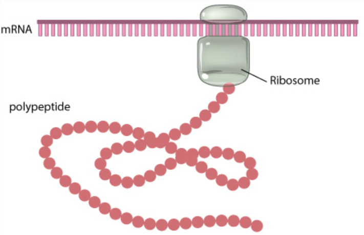
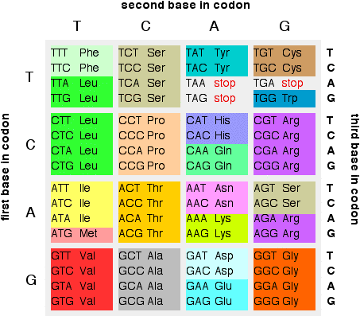

2.3.1 Translating bases to codons
1 Codons
Codons are triples of bases. These are the units ribosomes use to translate between bases and aminoacids.

Many representations are possible to show the translation between codons and aminoacids.

2 Mapping codons
Translate into the corresponding aminoacids:
> s <- DNAString("ACTGAGACACTTGCG")
> Biostrings::translate(s)
5-letter AAString object
seq: TETLA3 Genes
The molecular gene is a sequence of nucleotides in DNA that is transcribed to produce a functional RNA. Genes can lead to the production of sequences of aminoacids. That is, proteins. There are particular codons that can imply the start and the end of genes:
- Genes start with
ATG(Methionine). - Genes end with
TAA(Ochre),TAG(Amber),TGA(Opal).
> start <- DNAString("ATG")
> end1 <- DNAString("TAA")
> end2 <- DNAString("TAG")
> end3 <- DNAString("TGA")Apply the function Biostrings::translate to each one of these.
4 1, 2 and 3 reading frames
We can name sites as reading frames 1, 2 or 3 depending if their nucleotide has remainder 0, 1 or 2, respectively when divided by three. Start and end sites must be in the same reading frames.
By default, a sequence is in the reading frame 1. We can find the other reading frames by skipping the starting position:
> s[1:length(s)] # reading frame 1, same as s
> s[2:length(s)] # reading frame 2
> s[3:length(s)] # reading frame 35 Exercise: finding all possible codons
In the full sequence, genes don’t have to start at the beginning of the sequence. Therefore, there are three possible lists of codons.
> c1 <- Biostrings::translate(s[1:length(s)])
> c2 <- Biostrings::translate(s[2:length(s)])
> c3 <- Biostrings::translate(s[3:length(s)])Look at these three sequences, and try to find genes. Remembering, it starts with M, and finishes with *.
6 Computationally find potential genes
- Find the potential start and end codons in the sequence. (In 1, 2 or 3 position)
- Match start codons to end codons. These end codons must be after the start codons, and there must a multiple of three bases between them.
- Extract the obtained sequences between start and end.
7 Exercise 1: finding potential genes
Find the possible genes in this sequence:
ATGGGGCTCATTCAAGAAGAATGGAGTAACTAG8 Exercise 2: finding potential genes
Find the possible genes in this sequence:
GCTCATTCAAGAAGAATCGAGTAACTGCAG